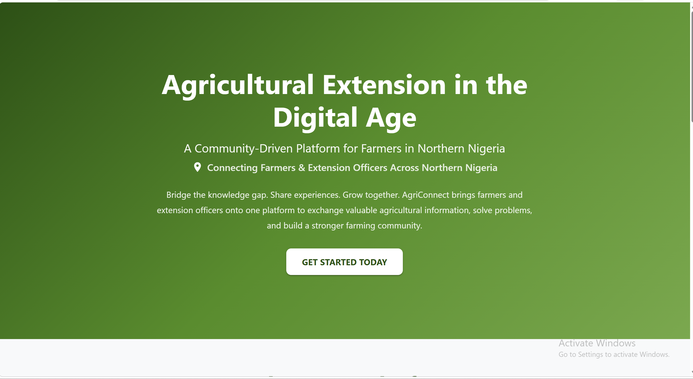
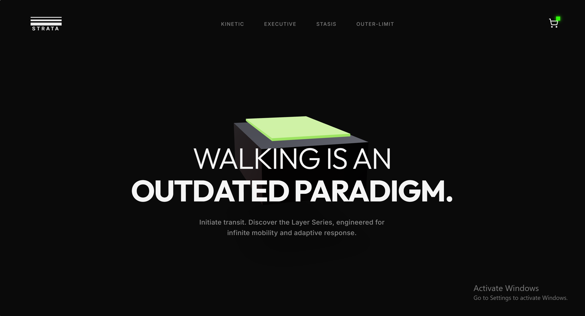

Hi, I'm Ismail Dauda Kewa.
I build scalable backend systems, mobile apps, and robust infrastructure. Passionate about clean code, open source, and solving complex technical challenges.
Technical Expertise
Frontend
Backend
Mobile
Database & DevOps
Project Roadmap

AgriConnect (Green Academy)
A full-stack agricultural marketplace platform addressing the 1:10,000 extension officer-to-farmer ratio in Northern Nigeria. Features Q&A forums, crop recommendation engine, and real-time chat.

Stephen Alaekwe & Co (sac.ng)
A collaborative project involving the review, planning, and implementation of improvements for a corporate data privacy and consulting firm's website.

ALU MC (Muslim Community)
A comprehensive utility application developed for the African Leadership University Muslim Community. Designed to support daily spiritual practices with core features including Prayer Time Calculator, Qibla Compass, Digital Tasbih, and curated daily inspiration.

Strata
A satirical mock brand project featuring hyper-modern footwear product lines, minimalist digital branding, logos, and 3D design concepts.
Bookstore Application
A full-stack e-commerce application for browsing and purchasing books, implementing extensive API testing and frontend debugging.
Full-Stack Task Manager
A complete CRUD application built to demonstrate full-stack capabilities, featuring secure authentication and robust relational database modeling.
Freelance Client Project
A custom website developed and deployed for a client from scratch, managing the entire lifecycle from requirements gathering to hosting.